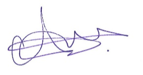

Profile & Motivation
Welcome, and thank you for visiting my profile.
My name is Abdi Abdirashid. As a motivated career changer into quality assurance, I bring a completed Maintenance Practitioner EBA apprenticeship and professional experience in production, maintenance and installation.
Throughout my working life, I have learned to take responsibility, work carefully and adapt quickly to new situations. I work well independently and also value teamwork. Reliability, respect and a positive attitude are very important to me.
I am originally from Somalia and grew up in Kenya and Tanzania before moving to Switzerland in 2016. Switzerland is now my home, where I completed my education and built my life. Growing up in different countries taught me to approach people openly, understand different cultures and adapt quickly to new environments.
Since April 2025, I have worked in production at Stooss AG. Alongside my full-time job, I am completing the Google IT Support Professional Certificate on Coursera and developing practical QA skills in manual testing, test cases, bug reporting, regression testing, exploratory testing, browser DevTools and API testing fundamentals.
I communicate calmly and clearly, document carefully and work with a strong awareness of quality and safety. Reliability and willingness to learn are among my key strengths.
I gain practical experience through my own job application tracker with authentication and cloud data and through my HTML, CSS and JavaScript learning portfolio. I test login, forms, validation and responsive views, write test cases and document defects with expected and actual results.
I am looking for a junior Quality Assurance or Software Testing position where I can test applications carefully, document defects clearly and learn from an experienced QA team. My notice period is one month; no visa sponsorship is required.
Thank you for your interest and your time. I look forward to introducing myself personally.
Kind regards

Abdi Abdirashid